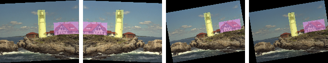
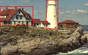

Pipelines
This page walks through complete augmentation pipelines for common computer vision tasks.
- Wrap the data in items.
- Call the transform on the item or on a tuple of aligned items, such as
tfm((image, mask)). The items in the tuple share the transform's random state. See Design. - Prepare each item for the model with preprocessing transforms and unwrap the result with
itemdata.
The examples use the lighthouse picture from the Gallery.
image = testimage("lighthouse")
image = imresize(image, ratio = 196 / size(image, 1))2D images
For image classification only the image is transformed, since the label does not change. Training uses random transformations; validation uses deterministic ones, so that results are comparable between epochs.
train_tfm = Maybe(FlipX()) |> RandomResizedCrop(128; scale = (0.5, 1.0)) |> AdjustBrightness(0.2)
val_tfm = CenterResizeCrop(128)
item = Image(image; antialias = true)
showgrid([train_tfm(item) for _ in 1:6]; ncol = 6, npad = 8)RandomResizedCrop samples a window by area and aspect ratio, then resizes it to the target size. FlipX flips around the input bounds and shares a single projection with the crop. antialias = true prefilters the image when downsampling. ImageToTensor and Normalize turn each result into a normalized Float32 array.
prep = ImageToTensor() |> Normalize((0.485, 0.456, 0.406), (0.229, 0.224, 0.225))
train = train_tfm |> prep
validate = val_tfm |> prep
x = itemdata(train(item))
size(x), size(itemdata(validate(item))), eltype(x)((128, 128, 3), (128, 128, 3), Float32)Each sample has shape (width, height, channels). See Using with Flux for batching and policy-based augmentations for preset training policies.
Images and segmentation masks
For segmentation, the image and its mask have to be transformed in exactly the same way. Wrap the mask in a MaskMulti with the list of its classes. Here is a mask with the background, the lighthouse and the house, drawn by hand:
labels = ones(Int, size(image))
labels[28:118, 122:146] .= 2
labels[72:112, 14:95] .= 3
mask = MaskMulti(labels, 1:3)
showitems((Image(image), mask); maskbackground = 1)
showitems blends the classes of the mask over the image and skips background class 1 here. Pass the image and mask together so they share the flip, rotation, and crop. Masks use nearest-neighbor interpolation to preserve class labels. AdjustBrightness targets the image.
tfm = Maybe(FlipX()) |> Rotate(10) |> RandomResizeCrop((128, 160)) |> AdjustBrightness(0.2)
showgrid([tfm((Image(image), mask)) for _ in 1:4]; ncol = 4, npad = 8, maskbackground = 1)
After the shared transform, use ImageToTensor on the image and OneHot on the mask.
mask_prep = OneHot() |> PermuteDims(2, 1, 3)
timage, tmask = tfm((Image(image), mask))
x = itemdata(prep(timage))
y = itemdata(mask_prep(tmask))
size(x), size(y)((160, 128, 3), (160, 128, 3))OneHot returns (height, width, classes). The PermuteDims step puts width first to match the image tensor.
Images and keypoints
Keypoints represent landmarks as SVectors in array dimension order. SVector(i, j) is the position of image[i, j]. The second argument gives the size of the image. Use Polygon for vertices that outline an object.
points = SVector{2, Float32}[(30, 134), (116, 134), (72, 55)]
keypoints = Keypoints(points, size(image))
showitems((Image(image), keypoints))Pass the image and keypoints to the same transform. SanitizeKeypoints marks landmarks outside the crop with NaN while preserving their positions in the landmark array. showitems skips those points. Use ClampKeypoints to move coordinates into the image's index ranges.
tfm = Maybe(FlipX()) |> Rotate(10) |> RandomResizeCrop(128) |> SanitizeKeypoints()
showgrid([tfm((Image(image), keypoints)) for _ in 1:4]; ncol = 4, npad = 8)_, tkeypoints = tfm((Image(image), keypoints))
itemdata(tkeypoints)3-element Vector{StaticArraysCore.SVector{2, Float32}}:
[21.025185, 48.30564]
[75.783966, 47.406853]
[48.59407, 98.132645]Images and bounding boxes
For object detection, wrap all boxes for an image in a BoundingBoxes collection. In the default :XYXY format each column holds (xmin, ymin, xmax, ymax). Coordinates use x along columns and y along rows, with integer coordinates at pixel centers. The canvas size is (height, width).
coords = [122 14
28 72
146 95
118 112]
boxes = BoundingBoxes(coords, size(image); labels = [:lighthouse, :house])
detect_tfm = Maybe(FlipX()) |> RandomIoUCrop() |> PinOrigin() |> SanitizeBoundingBoxes()
timage, tboxes = detect_tfm((Image(image), boxes))
showitems((timage, tboxes))
RandomIoUCrop selects a window based on overlap with the boxes or keeps the full image. When it crops, it clips boxes whose centers stay inside the window and collapses the others. PinOrigin makes the image axes one-based and shifts the boxes by the same amount. SanitizeBoundingBoxes drops collapsed boxes together with their labels. After a plain crop or warp, use ClampBoundingBoxes before sanitizing to keep the visible part of partially cropped boxes.
x = itemdata(prep(timage))
target = (boxes = itemdata(tboxes), labels = tboxes.labels)
size(x), target((180, 114, 3), (boxes = [95.0 0.5; 0.5 14.0; 119.0 68.0; 60.0 54.0], labels = [:lighthouse, :house]))Use box_convert if the detector needs a different box format. For instance masks, masks_to_boxes builds the collection from a stack of binary masks. See Using with Flux for batching detection samples.
3D images
Flips such as FlipX adapt to the dimensionality of the item. CenterCrop(32) crops 32 voxels along every axis. Use a size tuple for different extents along each axis. Rotate(30) samples an angle for each of the three axes of a volume, and Rotate(α, β, γ) sets a separate range for each. Wrap a volume of colors such as Gray in Image and its segmentation in a MaskMulti of the same size.
Here is a synthetic volume and a mask for its central region.
dist2(i, j, k) = (i - 18)^2 + (j - 24)^2 + (k - 24)^2
volume = [Gray{Float32}(exp(-dist2(i, j, k) / 150)) for i in 1:48, j in 1:48, k in 1:48]
segmentation = [dist2(i, j, k) < 100 ? 2 : 1 for i in 1:48, j in 1:48, k in 1:48]
mask3d = MaskMulti(segmentation, 1:2)MaskMulti{3, Int64}() with size (48, 48, 48) and 2 classesThe volume uses linear interpolation and the mask uses nearest-neighbor interpolation. PinOrigin makes the cropped axes one-based so we can display the same slice index in each sample.
tfm = Maybe(FlipX()) |> Rotate(30) |> CenterCrop(32) |> PinOrigin()
middleslice(item) = itemdata(item)[:, :, 16]
samples = [tfm((Image(volume), mask3d)) for _ in 1:4]
imageslices = [middleslice(i) for (i, _) in samples]
maskslices = [Gray.(Float32.(middleslice(m) .- 1)) for (_, m) in samples]
mosaicview(vcat(imageslices, maskslices); ncol = 4, rowmajor = true, npad = 4, fillvalue = 1)![]()
The top row shows volume slices and the bottom row shows mask slices. ImageToTensor returns (width, height, depth, channels). Use PermuteDims(2, 1, 3, 4) after OneHot to put width first in the mask as well.
timage, tmask = tfm((Image(volume), mask3d))
to_tensor = ImageToTensor()
volume_mask_prep = OneHot() |> PermuteDims(2, 1, 3, 4)
size(itemdata(to_tensor(timage))), size(itemdata(volume_mask_prep(tmask)))((32, 32, 32, 1), (32, 32, 32, 2))For a video with time on the third axis, UniformTemporalSubsample selects evenly spaced frames from the video and its aligned masks. See Video.